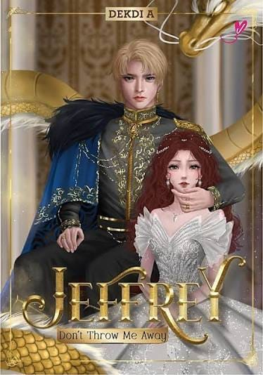

Koleksi Novel
Setiap halaman menyimpan cerita, setiap cerita memiliki makna✨

7 Wishes
Penulis: Asiah (MwizaMonat)
Penerbit: Choko Publisher
Genre: Fiksi, Persahabatan, Drama Keluarga
Jumlah halaman: 340 halaman
Sinopsis
Tujuh remaja penyandang disabilitas di Panti Asuhan Cahaya Harapan saling membantu mewujudkan impian mereka. Melalui berbagai tantangan dan konflik keluarga, mereka belajar tentang harapan, persahabatan, dan arti kebersamaan.
Pesan Moral
Keterbatasan bukan penghalang untuk bermimpi. Persahabatan dan kepedulian dapat memberikan kekuatan untuk menghadapi kesulitan.

0 MDPL
Penulis: Nurwina Sari
Penerbit: Romancius
Genre: Romantis, Drama
Jumlah halaman: 300 halaman
Sinopsis
Rangga Raja berusaha bangkit setelah kehilangan cinta pertamanya, Andini Hangura. Ia harus menerima kenyataan, menyembuhkan luka hati, dan menemukan kembali arah hidupnya setelah hubungan yang diharapkannya tidak berjalan sesuai keinginan.
Pesan Moral
Kehilangan bukan akhir dari segalanya. Kita perlu belajar menerima kenyataan dan melanjutkan hidup.

3726 MDPL
Penulis: Nurwina Sari
Penerbit: Romancius
Genre: Romantis, Drama
Jumlah halaman: 280 halaman
Sinopsis
Rangga Raja, mahasiswa kehutanan sekaligus ketua pelaksana OSPEK, berjuang mengejar cinta Andini Hangura. Kisah mereka berpadu dengan dunia pendakian dan perjuangan mencapai puncak Gunung Rinjani.
Pesan Moral
Perjuangan membutuhkan keberanian, kesabaran, dan tekad. Namun, perasaan orang lain juga harus dihargai.

Kamar No. 7
Penulis: Hanifa Azzahrra
Penerbit: Media Kita
Genre: Horor, Misteri, Thriller Psikologis
Jumlah halaman: 324 halaman
Sinopsis
Tujuh siswa di Maitra Boarding School harus tinggal di Kamar Nomor 7 yang terkenal terkutuk. Berbagai teror dan kejadian misterius memaksa mereka bekerja sama untuk mengungkap rahasia kelam sekolah.
Pesan Moral
Keberanian, kerja sama, dan kepercayaan sangat penting ketika menghadapi bahaya dan misteri.

Apartemen 119
Penulis: Audi
Penerbit: Red Swan Book
Genre: Misteri, Horor, Thriller Psikologis
Jumlah halaman: 304 halaman
Sinopsis
Kehidupan tujuh remaja di sebuah apartemen berubah setelah salah satu dari mereka ditemukan tewas. Kematian misterius tersebut memicu rasa curiga, teror, dan terbongkarnya rahasia masa lalu para penghuni.
Pesan Moral
Jangan mudah menuduh orang lain. Cari kebenaran dengan teliti sebelum mengambil keputusan.

Seporsi Mie Ayam Sebelum Mati
Penulis: Brian Khrisna
Penerbit: Grasindo
Genre: Fiksi, Drama
Jumlah halaman: 216 halaman
Sinopsis
Ale, seorang pria yang sedang mengalami masa sulit, ingin menikmati seporsi mie ayam untuk terakhir kalinya. Perjalanan mencari makanan tersebut mempertemukannya dengan orang-orang yang perlahan mengubah cara pandangnya terhadap kehidupan.
Pesan Moral
Hal-hal sederhana dan kebaikan dari orang lain dapat memberikan harapan baru. Penting untuk mencari dukungan ketika menghadapi masa sulit.

Ayahku Bukan Pembohong
Penulis: Tere Liye
Penerbit: Gramedia Pustaka Utama
Genre: Fiksi, Drama Keluarga
Jumlah halaman: 304 halaman
Sinopsis
Dam tumbuh dengan cerita luar biasa dari ayahnya. Saat dewasa, ia mulai meragukan cerita tersebut. Seiring waktu, Dam belajar memahami nilai kehidupan dan kasih sayang yang ingin disampaikan ayahnya.
Pesan Moral
Kebahagiaan tidak selalu berasal dari kekayaan, tetapi juga dari kesederhanaan, kasih sayang, dan rasa syukur.

Dia Razi
Penulis: Nurwina Sari
Penerbit: Romancius
Genre: Romantis, Fiksi Remaja
Jumlah halaman: 320 halaman
Sinopsis
Razi adalah cowok dingin yang fokus pada basket dan masa depannya. Prinsipnya mulai berubah setelah bertemu Ilusi, seorang gadis misterius yang juga memiliki kemampuan bermain basket.
Pesan Moral
Jangan menutup diri terhadap perubahan. Mengenal seseorang dapat mengajarkan kita memahami perasaan dan sudut pandang baru.

Jeffrey :Don't Throw Me Away
Penulis: Dekdi A
Penerbit: Reneluv
Genre: Fantasi, Romantis, Kerajaan, Perjalanan Waktu
Jumlah halaman: 412 halaman
Sinopsis
Julian Rozeanne Pollin dikhianati dan dibuang oleh suaminya, Raja Jeffrey Narenth Felipe. Ia kemudian kembali ke masa sepuluh tahun sebelumnya dan berusaha mengubah takdir agar tidak mengalami kehancuran yang sama.
Pesan Moral
Jangan kehilangan harga diri demi orang lain. Kesempatan kedua dapat digunakan untuk memperbaiki keputusan dan menentukan masa depan.

Lotus in the Mud
Penulis: Annelie
Penerbit: Akad
Genre: Drama, Romantis
Jumlah halaman: 480 halaman
Sinopsis
Audine dan Ocean adalah dua orang yang sama-sama menghadapi luka masa lalu. Hubungan mereka menjadi perjalanan untuk saling memahami, menghadapi trauma, dan menemukan kesempatan untuk pulih.
Pesan Moral
Setiap orang memiliki perjuangannya sendiri. Kesabaran, penerimaan, dan dukungan dapat membantu proses penyembuhan diri.

Hotel Magnifique
Penulis: Emily J. Taylor
Penerbit: Noura Books
Genre: Fantasi, Misteri, Petualangan
Jumlah halaman: 416 halaman
Sinopsis
Jani dan adiknya, Zosa, memasuki Hotel Magnifique, hotel ajaib yang berpindah tempat setiap tengah malam. Di balik kemewahannya, Jani menemukan kontrak sihir berbahaya dan berusaha mengungkap rahasia pemilik hotel demi menyelamatkan adiknya.
Pesan Moral
Kasih sayang keluarga, keberanian, dan keteguhan hati dapat membantu kita menghadapi bahaya.

Yang Katanya Cemara
Penulis: Vania Winola
Penerbit: Bukune
Genre: Fiksi Remaja, Drama Keluarga
Jumlah halaman: 224 halaman
Sinopsis
Vania bermimpi memiliki keluarga yang utuh dan harmonis. Namun, perceraian orang tuanya membuat ia harus menghadapi kenyataan yang menyakitkan dan belajar menerima perubahan dalam keluarganya.
Pesan Moral
Tidak semua keluarga memiliki cerita yang sempurna. Kita perlu belajar menerima keadaan, menghargai diri sendiri, dan tetap memiliki harapan.